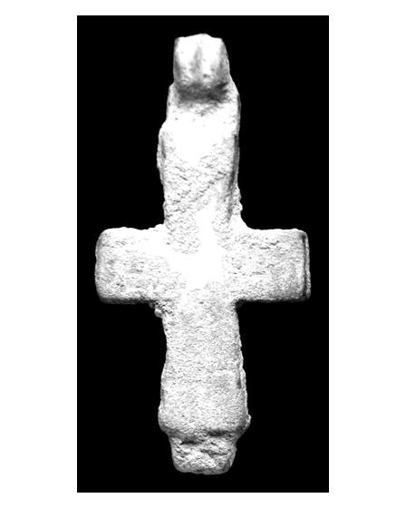
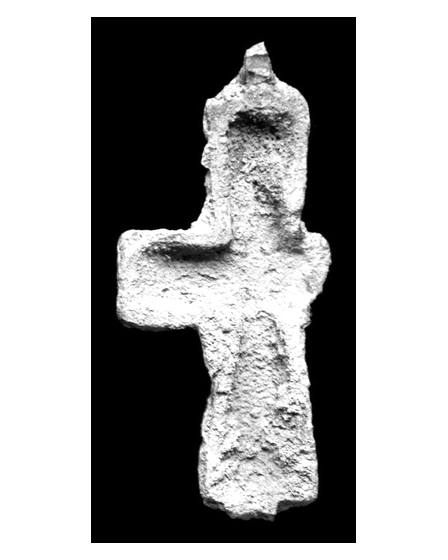

Catalog › CE-0395 · APH2017-14
Encolpion bivalv din aliaj de cupru, cat. 14, Aphrodisias
sec. IX–XII (801–1200) · Turcia
double-sided reliquary cross (enkolpion), altul; c. IX–XII (801–1200); find spot unknown.




Identificare
- Categorie
- Encolpion bivalv (relicvar)
- Material
- Altul
- Stare
- Fragmentară
- Dimensiuni
- Î 54 × L 27 × Gr 9 mm
Iconografie
- Avers
- Fără decor
- Descriere avers
- Mică cruce-relicvar completă, din două părți, necurățată vreodată și încrustată cu pământ. Valva de sus e completă și păstrează mecanismul balamalei sus și jos; valva de jos nu mai are brațul transversal stâng, iar cârligele care o legau de cea de sus s-au rupt. Brațe transversale scurte și dreptunghiulare. Ambele valve par nedecorate.
- Revers
- Fără decor
- Descriere revers
- Ambele valve par nedecorate.
- Limba
- Fără inscripție
Datare și atribuire
- Datare
- sec. IX–XII (801–1200)
- Centru
- Necunoscut
- Tipologie
- Pitarakis (2006), forma tip I, balama tip II
Descoperire
- Țară
- Turcia
- Context
- Colecție (fără context)
Păstrare și referințe
- Nr. inventar
- 4228
- Bibliografie
- H. Jeffery, The Archaeology of Middle Byzantine Aphrodisias, teză DPhil în arheologie clasică, University of Oxford, aprilie 2019 [Jeffery 2019], vol. 3 (Figures), Descriptive Catalogue Four: Copper Alloy Reliquary Crosses, cat. nr. 14 (paginile nu sunt numerotate în PDF; p. PDF 443), fotografie reprodusă la p. PDF 442.
- Figura
- fotografie în catalog, fără număr de figură
- Planșe
- Jeffery 2019, vol. 3, Cat. Four, p. PDF 442
- Observații
- Locul descoperirii indicat ca „alleged”: Karahisar. Numărul de inventar e de muzeu. Autorul spune că, deși nedecorată, crucea poate fi atribuită unei perioade largi, între sec. IX și XII. Dimensiuni: L. 5,4 × l. 2,7 × gros. 0,9 cm. Cele două imagini nu sunt atribuite în sursă feței sau reversului. Material: „copper alloy” (aliaj de cupru) în sursă. Coordonate: nu sunt date în sursă.
Citare: Corpus Encolpiorum, CE-0395, Encolpion bivalv din aliaj de cupru, cat. 14, Aphrodisias, --root/piese/APH2017-14/ (accesat 2026-10-20).